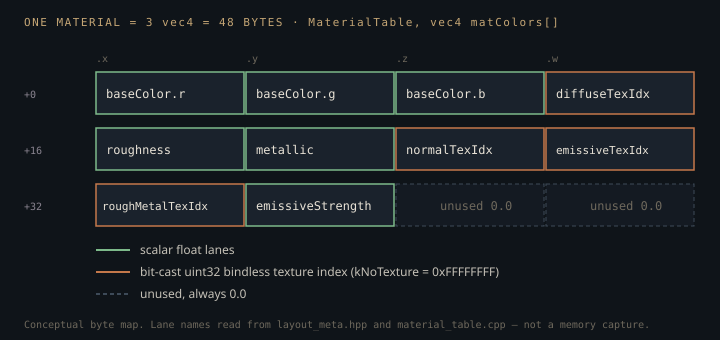

Monograph · Tree · ← Module hub · GPU material pack
materials
GPU material pack
3×vec4 matColors, texture bit-cast indices.
A struct that exists on only one side
There is no material struct on the GPU. The path tracer binds the table as a flat array of `vec4` and nothing else:
layout(set = 0, binding = 10, std430) readonly buffer MatColorBuffer { vec4 matColors[]; } matColorBuf;shaders/rt/pt_closesthit.rchit:35The G-buffer fragment shader binds the *same buffer* in its own set under a different name and the same element type, `vec4 matRows[]`. A material is therefore a convention rather than a type: three consecutive vec4s, twelve float lanes, and a meaning per lane that the producer and each consumer have to agree on independently. The closest-hit shader reassembles the row by hand, one indexed load per slot, before it knows what any lane holds:
vec4 matParams2 = matColorBuf.matColors[matID * 3u + 2u]; // (roughMetalTexIdx, emissiveStrength, unused, unused)shaders/rt/pt_closesthit.rchit:110`layout_meta.hpp` is where that convention is written down. The stride there is derived from the slot count — `kMaterialBytes = kMaterialVec4s * sizeof(glm::vec4)` — and the derived value is then pinned against a literal:
static_assert(MaterialGpuPack::kBytes == 48, "material pack is 3 * 16 bytes");ohao/gpu/layout_meta.hpp:54The producer is tied to it: `MaterialTable::Pack` is a `std::array<float, 12>`, and a `static_assert` equates its size with `MaterialGpuPack::kBytes`.
Integers that have to travel as floats
Four of the twelve lanes hold bindless texture indices — uint32 values in an array whose element type is float. `pack` reinterprets the bits instead of converting the value:
const auto bits = [](uint32_t u) { return std::bit_cast<float>(u); };ohao/render/scene/material_table.cpp:35The "no texture" case is the all-ones uint32, `kNoTexture`, and it goes through the same cast. The closest-hit shader reverses it with `floatBitsToUint` before testing against the sentinel:
if (diffuseTexIdx != 0xFFFFFFFFu) {shaders/rt/pt_closesthit.rchit:122A value conversion would not have worked: binary32 represents integers exactly only up to $2^{24}$, and 0xFFFFFFFF has no exact float representation at all. Reinterpretation is exact, but it parks every index in a numerically hostile region. Let $i$ be the uint32 index and $\mathrm{bits}^{-1}(i)$ the binary32 number whose bit pattern equals $i$. For $0 < i < 2^{23}$ the exponent field is all zeros, so the result is subnormal:
Bindless indices are small, so *every nonzero texture index in the pack is a subnormal float* (index 3 reads as $4.2 \times 10^{-45}$); index 0 reinterprets as $+0.0$, and the sentinel is a NaN. All three survive only because nothing does arithmetic on those lanes — they are memcpy'd in, loaded, bit-cast out. A pass that multiplied, interpolated, or ran under flush-to-zero there would not crash; it would silently repoint the scene's textures.
One writer, and the indices exist before the row does
The pack is assembled in exactly one place. `MaterialTable::pack` turns a `MaterialDesc` into its twelve lanes in a single expression, and `add` appends the row to a host array and marks its index dirty:
m_packs.push_back(pack(desc));ohao/render/scene/material_table.cpp:54That is possible because a `MaterialDesc` already holds finished bindless indices by the time it is registered. `uploadModel` loads each model texture into the bindless manager first — all albedo, then normal, rough/metal, emissive, one upload per material — writes the returned index into the material's field, and only then registers the material. A row is never written with sentinels and patched later, and no lane has two writers:
if (m.emissiveTex != kNoTexture) m.emissiveStrength = 1.0f;ohao/render/scene/model_upload.cpp:212The host array is the only CPU copy, and device memory is written only by copies the frame records. `recordUploads` walks the dirty set, coalesces contiguous indices into runs, and records one copy per run through the frame slot's staging buffer:
batch.upload(m_buffer.buffer, VkDeviceSize{first} * sizeof(Pack), &m_packs[first],ohao/render/scene/material_table.cpp:66so a host write can never race a frame still reading the table. Row 0 is registered at initialisation as the default `MaterialDesc{}`, and it is the fallback twice over: an instance whose material list is shorter than a submesh's slot resolves to it, and a registration into a full table (capacity 4096) logs once and returns it.
static constexpr uint32_t kCapacity = 4096;ohao/render/scene/material_table.hpp:17Which row a hit uses is decided per instance, not per material: the closest-hit shader reads the triangle's slot from the mesh's slot stream, then the instance's material-reference list, with the same `OHAO_MATERIAL_INDEX` macro the G-buffer uses, so raster and RT cannot disagree about which material a triangle has.
Row 2 holds the roughness/metal texture index, the emissive strength and the subsurface strength, which only the raster G-buffer reads (to flag SSS tiles and sign the normal target's fourth channel; the path tracer ignores it). The last lane `pack` writes as zero and no shader reads.
bits(d.roughMetalTex), d.emissiveStrength, d.subsurface, 0.0f,ohao/render/scene/material_table.cpp:39
Interleaving the indices into the float rows keeps a whole material inside one binding, and it lets raster and RT share it. The alternative — a parallel SSBO of uints beside the colours — needs no bit-casting and no NaN/subnormal discipline, but costs a second descriptor binding per consumer and a second buffer to keep in step. It does not save a fetch: the closest-hit already issues three separate loads from the table before it decodes a single index. OHAO pays for the one binding with the standing rule that four of the twelve lanes are opaque bits.
The constants that are load-bearing, and the ones that are decoration
`MaterialGpuPack` offers `byteOffset()` and `vec4Count()` so nobody has to write the stride by hand, and a canonical `kNoTexture`:
static constexpr uint32_t kNoTexture = 0xFFFFFFFFu;ohao/gpu/layout_meta.hpp:37Grep says otherwise. `byteOffset` and `vec4Count` are called only by their own self-asserts and by `tests/engine/engine_tests.cpp`; `MaterialGpuPack::kNoTexture` is referenced nowhere outside its own header. The renderer has a second `kNoTexture` of its own in the scene types, with the same value, and that is the one every producer uses:
inline constexpr uint32_t kNoTexture = 0xFFFFFFFFu;ohao/render/scene/render_scene_types.hpp:39Every consumer hardcodes the stride 3 — `matRows[m * 3u + 0u]` in the G-buffer, `matID * 3u` in the closest-hit — so the static asserts are a lock, not a derivation: editing `kMaterialVec4s` breaks the build on the C++ side instead of updating the shader strides, because the strides are in the shaders.
A header that only looks like padding
The light SSBO plays the same game with a sharper move. `GPULight` is five vec4s, 80 bytes, and the raygen shaders declare binding 11 as `{ uint lightCount; GPULight lights[]; }`. Under std430 a struct of vec4s aligns to 16, so the array cannot begin at offset 4 — it begins at 16, and the light table names exactly that as its header size:
static constexpr VkDeviceSize kHeaderBytes = 16;ohao/render/scene/light_table.hpp:18The 12 bytes between the count and the first light look like alignment slack. They are not. `pt_miss.rmiss` declares the *same binding* as a different block — four scalars, no light array — and reads the environment-map index and HDRI intensity out of that gap:
uint envMapTexIdx; // bindless index of HDR env map (0xFFFFFFFF = none)shaders/rt/pt_miss.rmiss:30One buffer, two structurally different views chosen per shader stage. The header is written whole whenever the table is dirty: the light count, the environment index, the intensity scale and a sentinel word.
const uint32_t header[4] = {static_cast<uint32_t>(m_rt.size()), m_envMapTexIdx,ohao/render/scene/light_table.cpp:254The environment index and intensity are stored in the light table itself (`setEnvMapTextureIndex`, `setEnvIntensity`), and changing either marks the table dirty, so a rebuild of the lights cannot lose them. What remains of the coupling is its shape: a miss shader reading words that a light-list type owns.
What the layout assertion cannot see
Both packs are guarded by one macro:
OHAO_ASSERT_GPU_LAYOUT(GPULight, layout::kGPULightBytes);ohao/render/rt/gpu_light.hpp:17It expands to two static asserts — that the type satisfies `GpuPod` (trivially copyable, standard layout) and that `sizeof` equals the stated number. Both are facts about C++. Nothing in the tree reflects the SPIR-V, and the GLSL `GPULight` is hand-copied into `pt_raygen.rgen`, `pt_raygen_offline.rgen` and `pt_raygen_realtime.rgen` with no shared include. The assertion catches a C++ edit and is blind to a shader edit.
The same header carries a constant that reads like a hard limit and is not one:
static constexpr uint32_t MAX_GPU_LIGHTS = 64;ohao/render/rt/gpu_light.hpp:19It is referenced: the light table sizes the device buffer as the header plus 64 lights and truncates a longer list with a one-time log. The shaders clamp their light choice against `lightBuf.lightCount`, which is already post-truncation. The deferred side is the same kind of bound — its cap is a fixed array length, so it genuinely bounds the loop:
LightData lights[MAX_LIGHTS];ohao/gpu/vulkan/renderer.hpp:80The bill for an overloaded lane
Compactness is bought by giving one lane several meanings, and the light pack shows the price. `dirAndParam.w` is a radius for sphere lights and an inner cone angle in degrees for spot lights:
glm::vec4 dirAndParam; // xyz=direction, w=param (sphere:radius, spot:innerAngle)ohao/render/rt/gpu_light.hpp:13dirParam = d.innerConeDeg;ohao/render/scene/light_table.cpp:189The shader-side copy of that struct has already lost half the documentation:
vec4 dirAndParam; // xyz=direction, w=param (sphere:radius)shaders/rt/pt_raygen.rgen:21and the code matches the comment it kept. Each NEE block in `pt_raygen.rgen` hoists `float lightRadius = light.dirAndParam.w;` before dispatching on light type, and the spot branch consumes that value twice — once inside `cos(radians(...))`, which is correct, and once as the radius of the sphere it samples an emitter point on, which is not. The block appears three times in that file (bounce 0, then once per attribution channel at bounce ≥ 1), so no line inside it is a unique citation anchor; the struct declaration above is. It is also copied whole into the other two raygens — three more in `pt_raygen_offline.rgen`, four in `pt_raygen_realtime.rgen` — ten independent copies of the same branch, none sharing an include.
The two explicit $4\pi r^2$ factors do cancel: the pre-branch normalisation divides the emitter's power by the sphere area, and the spot branch's weight multiplies it back. Nothing else cancels. The emitter point is sampled *on* that sphere, so the shadow-ray direction, the distance feeding $1/d^2$, and the cone falloff evaluated along the scattered direction all move with $r$. With the default cone:
float innerConeDeg{30.0f};ohao/ecs/components.hpp:67a spot light aims its shadow ray at a uniformly random point on a sphere of radius 30 *world units* around the light, then evaluates the cone falloff along that scattered direction. Nothing is out of range, no assertion fires, the pack is exactly 80 bytes, and the units are wrong.
The static asserts prove that 48 is 48 and 80 is 80. Nothing proves that a lane still means what its comment says, or that the GLSL copy of a struct still matches the C++ one. Every genuine defect in this unit is semantic — a stale comment, a re-hardcoded stride, an angle read as a radius — sitting underneath a size contract that passes.
Contracts
- A `MaterialDesc` must carry finished bindless indices when it is registered. The table has no second pass that patches texture lanes in, so a texture uploaded after `registerMaterial` never reaches the row.
- Nothing may do arithmetic on the four index lanes. Nonzero indices are subnormal floats, index 0 is $+0.0$, the sentinel is a NaN; all three are safe only as opaque bits.
- Row 0 is the default material and the fallback for a short material list and a full table. Code that registers materials must not assume a returned handle is distinct from 0.
- The light-buffer header is written by `LightTable::recordUploads`, whole, whenever the table is dirty. The environment index and intensity live in the table, so a light rebuild keeps them; anything else writing binding 11 would have to reproduce the 16-byte header.
- The GLSL `GPULight` lives in three hand-maintained raygen copies. `OHAO_ASSERT_GPU_LAYOUT` sees none of them, and no test reflects the SPIR-V.
- `MAX_GPU_LIGHTS` bounds the RT light list: the device buffer is sized for 64 and a longer list is truncated with a log.
Source files
shaders/rt/pt_closesthit.rchitohao/gpu/layout_meta.hppohao/render/scene/material_table.cppohao/render/scene/model_upload.cppohao/render/scene/material_table.hppohao/render/scene/render_scene_types.hppohao/render/scene/light_table.hppshaders/rt/pt_miss.rmissohao/render/scene/light_table.cppohao/render/rt/gpu_light.hppohao/gpu/vulkan/renderer.hppshaders/rt/pt_raygen.rgenohao/ecs/components.hppParent hub for the full pipeline narrative; this page is the file-level design unit. Sitemap · hover glossary terms anywhere.